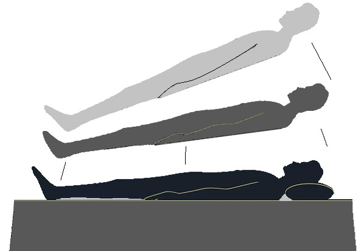
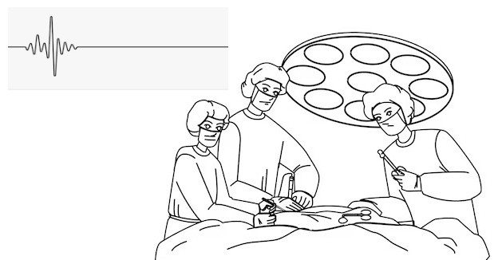
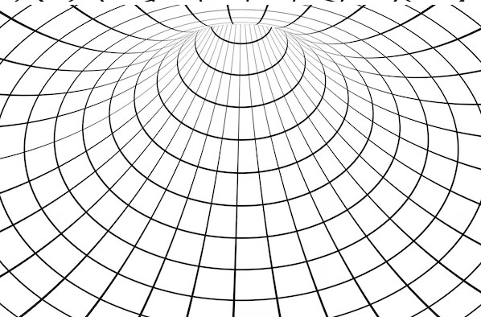
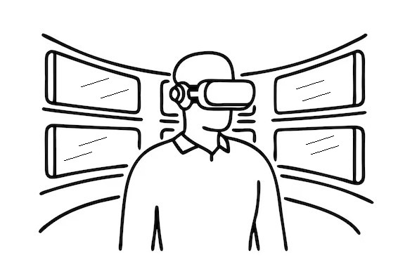
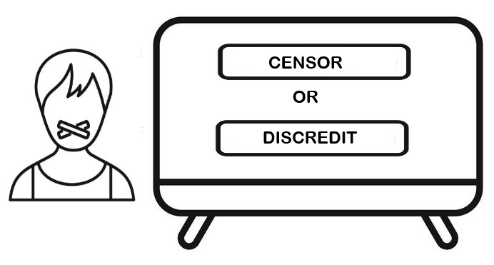

"I was shown that love is supreme. I saw that truly without love we are nothing." — Betty Eadie, NDE experiencer
What if everything we've been told about death is wrong?
For thousands of years, death remained humanity's ultimate mystery: the one door we could never peek behind and return to tell the tale. Sure, religions painted pictures of the afterlife, but let's be honest: those were matters of faith, not evidence. You either believed or you didn't.
Then something remarkable happened. Modern medicine got so good at resuscitation that we started bringing people back from the other side ... thousands of them. And here's the interesting bit: they're all saying the same thing.

We're not talking about a few anecdotes shared at dinner parties. Near-death experiences are now documented in The Lancet, studied at major universities, and reported by everyone from devout Christians to hardcore atheists, from Buddhist monks to materialist scientists. The evidence is piling up so high that even the skeptics are starting to sweat.
Wait ... was Jesus being literal?
Here's where it gets wild. People who've been clinically dead (no heartbeat, no brain activity, flatlined) consistently report they didn't actually "die." Their consciousness didn't wink out like a candle. Instead, it exploded outward, becoming more awake, more aware, more alive than they'd ever felt in their physical body. Think about that for a second. The moment we call "death" might actually be the moment we finally wake up.
1. You're Floating Above Your Own Body (And You Can Prove It)
Picture this: you're suddenly hovering near the ceiling, looking down at a scene that's equal parts fascinating and disturbing ... doctors frantically working on someone. Then it hits you: that's your body down there. This isn't theory ... it's backed by verified details that defy explanation. Take Pam Reynolds, whose eyes were taped shut and ears plugged during brain surgery. When she came back, she described the bone-saw they used ... looked like a dental drill, not the blade she'd imagined ... and she even quoted a joke the anesthesiologist told while her brain waves were completely flat. How do you explain seeing and hearing when you're clinically brain-dead? The skeptics are still scratching their heads on that one.

2. Reality Gets an Upgrade (Everything Else Becomes the Dream)
Here's the part that sounds impossible but gets reported over and over: the so-called "afterlife" feels more real than regular life. Colors aren't just vivid ... they're "more real than real," as experiencers keep saying. Thoughts happen at lightning speed, no clunky words needed. Questions you've wrestled with for years? Answered in these instant "downloads" of understanding. Dr. Eben Alexander ... a neurosurgeon who used to roll his eyes at this stuff ... came back describing 360-degree vision and grasping cosmic truths he'd never studied. His words? "As if the universe spoke in mathematics made of love." And this is coming from a brain surgeon who thought NDEs were hallucinations.
3. The Tunnel Isn't a Metaphor
You've heard about "the light at the end of the tunnel," right? Turns out it's not poetic license ... people actually experience it. They describe being pulled through a dark passage that's somehow both rapid and gentle, like the universe itself is guiding them home. At the end? A brilliant light that should hurt to look at but doesn't ... it welcomes. One cardiac arrest patient called it "being pulled along a cosmic birth canal." The light doesn't just shine ... it feels like home. Familiar. Safe. Irresistible.

4. Grandma's There (And She Looks Amazing)
The reunions hit different. Grandparents, siblings, even beloved pets show up looking healthy, young, radiant ... greeting you with what people describe as "telepathic hugs." In one jaw-dropping case, a woman encountered a little girl she didn't recognize. Later, the girl matched perfectly with a sister who'd been stillborn ... a secret her parents had never told her. These aren't vague feelings ... they're vivid encounters carrying one crystal-clear message: no one is ever truly lost.
5. You Meet Pure Love (And It Accepts Everything About You)
Beyond the family reunions, there's often an encounter that changes everything ... a being of pure light radiating acceptance so complete that every ounce of earthly shame just... evaporates. Christians describe this as encountering Jesus. Indigenous people describe luminous ancestors. Secular folks report an abstract "Source." But here's the wild part: the feeling is identical across all cultures ... INFINITE LOVE WITH ZERO JUDGMENT. This being doesn't speak in words; it communicates in pure understanding, answering your questions before you even finish thinking them.
6. Your Life Plays Back (And You Feel What Others Felt)
Almost all NDErs describe what has come to be termed 'The Life Review.' Imagine a 3D movie where you don't just watch ... you feel everything. People describe reliving key moments while simultaneously experiencing them from the other person's perspective. That harsh word you said? You now feel exactly how it landed in their heart. That random act of kindness? You feel the warmth boomerang back. One experiencer nailed it: "It's more a classroom than a courtroom." No external judge ... just you, confronting the full emotional truth of your impact on others.

This reminds me of the verse in John 5:22 which states that "... the Father judges no one, but has entrusted all judgment to the Son." I believe this is saying WE JUDGE OURSELVES.
It is a bit of a paradox, because the one doing the judging is our Higher Self which is connected to the Father and, in fact, is one with the Father [or Source or Universal Mind or the Word or Logos.] Our limited mind (our ego-mind) forces us into a separation mentality. I recognize it can be challenging to get our heads around this, I know.
The LIFE REVIEW component of NDEs is particularly significant. Unlike traditional religious concepts of judgment, the life review isn't punitive. People report experiencing not only their own actions but also their effects on others—feeling both the joy and the pain they caused. This isn't administered by an external judge but emerges from within, as consciousness sees itself with complete clarity.
Imagine a middle‑aged man named Carlos who, during a brief cardiac arrest, slips into what he later calls a "360‑degree life review."
First he relives an ordinary Tuesday morning when he barked at his nine‑year‑old daughter for spilling cereal on the floor. In an instant the scene flips: Carlos now is the little girl. He feels the sting of embarrassment crawl up her cheeks, hears her inner voice whisper, "Dad thinks I'm stupid," and senses her whole day dim. The sorrow lands in his own chest as sharply as if it were happening to him ... because, in that moment, it is.
The reel jumps to a different day: a blinding rainstorm on the highway. Carlos remembers pulling over to help an elderly stranger change a flat tire. Now the perspective shifts again ... he becomes the trembling woman gripping the steering wheel. He feels her surge of relief when his headlights appear, tastes the gratitude that warms her like sunlight, and even catches the wave of hope she carries into the weeks that follow, telling friends, "There really are good people out there."
In each vignette Carlos experiences both sides of every choice: the pain he caused, the joy he sparked, all braided together in a single thread of shared consciousness. That immersive empathy ... feeling not just what he did but how it echoed inside someone else ... is exactly what many near‑death experiencers describe when they say, "I judged myself by living through the hearts I touched."
This dovetails with Jesus' core teaching on compassion: "Do to others as you would have them do to you" (Luke 6:31) ... and with his striking comments about judgment. He noted that "the Father judges no one but has entrusted all judgment to the Son" (John 5:22), yet the same Jesus also declared, "I do not judge anyone… the very word I have spoken will judge them on the last day" (John 12:47‑48). In other words, ultimate judgment is not a gavel slammed by the Father or even by Jesus, but a mirror held up by the truth we already know. Because we are all "sons" and daughters of that same Father, the life review reported in near‑death experiences suggests we end up judging ourselves ... reliving every thought and deed from the other person's viewpoint ... revealing how deeply interconnected we really are.
7. Coming Back Feels Like a Downgrade
Here's another bit that's fascinating: After experiencing that level of peace and unconditional love, nobody wants to come back. They describe it like being asked to crawl back into a painful, limiting cage after tasting total freedom. Some report negotiations—being reminded of unfinished business, loved ones who still need them, purposes yet unfulfilled. Some wake up weeping. Others return with fierce determination. But nearly all of them carry the same lingering ache—a homesickness for that place they briefly knew, the one that made everything here feel like a shadow of something "more real than real."
Many, including some Gnostic writers and current remote-viewers, describe earth as being a "prison planet" to which we are repeatedly lured to return for self-development-type reasons. They describe this planet as being under the control of an evil Demiurge who pretends to be God and from whom Jesus came to liberate us. This concept warrants deeper exploration: watch for a future book in this series that will examine Gnostic perspectives and what certain remote-viewers are reporting. For now, I mention it simply because it lends a curious perspective to the reluctance many NDErs experience when being asked to return to physical life.
You bet it is. And the evidence is rock solid. My introduction to the subject was from the book "Life After Life" first published in 1975 by Dr.Raymond Moody who investigates over one hundred case studies of individuals who experienced "clinical death" and were later revived, significantly influencing public perceptions of the afterlife.
Dr. Pim van Lommel published a landmark study in The Lancet (yes, one of the world's most prestigious medical journals) documenting patients who made verifiable observations while clinically dead. We're talking zero brain activity, flatline EEG, the whole nine yards. Dr. Sam Parnia's AWARE studies doubled down on this, proving that consciousness doesn't just flutter out when the brain stops ... it keeps going.
Here's one that'll blow your mind: In cases documented by Dr. Kenneth Ring and others, women who had been completely blind from birth (never seen a thing in their entire lives) came back from their NDEs describing exact visual details of the operating room. The instruments. The doctors' movements. Their own resuscitation. Things they couldn't possibly have known through touch, sound, or any other sense. They saw them. Ring documented these "vision in the blind" NDE cases in his research at the University of Connecticut, publishing detailed accounts of blind individuals reporting visual perceptions during near-death experiences—a phenomenon that should be impossible if vision is purely brain-based. How do you explain that if the brain is the sole producer of consciousness?
NDEs flip the script on everything we've been taught. They suggest consciousness doesn't come FROM the brain ... it comes THROUGH the brain. Think of your brain like a radio receiver, not the broadcast itself. When the radio breaks, the signal doesn't disappear ... it just stops being filtered through that particular device.
This "filter model" was proposed by brilliant minds like William James and Henri Bergson over a century ago. They argued the brain doesn't create consciousness ... it reduces it, limiting an otherwise infinite awareness so we can function in physical reality. NDEs suggest they were right all along.
Now, here's where things get spicy. Spend five minutes on Wikipedia ... or pretty much any mainstream source ... and watch what happens when NDE research comes up. Like clockwork, you'll see the same defensive footnotes: "the methodology was questionable," "a flat EEG doesn't really mean zero brain activity," "these results do not overturn established science." The wording changes, but the mission doesn't: push the evidence to the margins before anyone asks the bigger questions.

Once you spot the pattern, you can't unsee it. And honestly? It would be funny if it weren't so tragic ... this relentless campaign to keep billions of minds locked away from their own untapped potential.
This book isn't asking you to ditch your skepticism. Keep it. Just aim it in both directions. Apply the same critical eye to the gatekeepers' knee-jerk dismissals that you do to the data itself. When you do, a radically different picture emerges ... one where van Lommel's, Parnia's and Moody's works aren't fringe curiosities but pivotal evidence that consciousness is bigger, stranger, and far more resilient than we've been allowed to believe.
NDErs describe accessing dimensions of awareness that dwarf ordinary consciousness—what they call "seeing with the eyes of the soul," perceiving the entire panorama of existence simultaneously, glimpsing what some physicists now theorize exists beyond time and space. These aren't religious metaphors; they're data points suggesting consciousness operates on scales we've barely begun to map. What if that infinite awareness isn't locked in your skull, but extends through dimensions science is only now beginning to measure?
The "many rooms" Jesus spoke of may well refer to the various dimensions of reality that NDErs describe—levels of existence beyond the physical that accommodate our continued growth and evolution. NDErs consistently report that what we call "death" is simply a transition from one state of consciousness to another.
When people come back from NDEs, they don't just return with stories ... they come back fundamentally changed. And I'm not talking about a little shift in perspective. I'm talking about seismic transformations that happen regardless of whether they were devout Christians, hardcore atheists, or anything in between.
The stats are staggering: Over 80% completely lose their fear of death. Just let that sink in. These people have died—clinically, medically dead—and when they come back, they're like, "Eh, death? No big deal." That's not normal human psychology. That's someone who's peeked behind the curtain.
But it doesn't stop there. They become compassion machines—suddenly able to feel what others feel with an intensity that would make most people uncomfortable. Material possessions? They start seeing them for what they are: just stuff. Their spirituality becomes wildly inclusive—no more "my way or the highway" mentality. And they live in the present moment with a focus that would make meditation masters jealous.
In other words, they start living exactly the way Jesus taught—but not because they're following religious rules. Because they've experienced the reality behind those teachings. They've seen it, felt it, lived it. When Jesus said, "I have come that they may have life, and have it to the full" (John 10:10), this might be exactly what he was talking about.
Jesus said to her, "I am the resurrection and the life. The one who believes in me will live, even though they die; and whoever lives by believing in me will never die." (John 11:25-26)
Read that again with NDE research in mind. Jesus isn't talking about some future resurrection ... he's describing consciousness that continues regardless of bodily death. Our true self, our consciousness, never actually experiences death. It just transitions. Sound familiar?
NDEs don't just offer comfort about what happens when we die ... they're windows into a reality that's happening right now. A reality where consciousness runs the show, love is the fundamental operating system, and we're infinitely more than the physical bodies we're currently piloting.
This isn't just interesting ... it's liberating. It frees us from the materialist trap that says we're just biological machines. It releases us from religious fear of eternal punishment. Most importantly, it reveals that what Jesus taught about eternal life wasn't some distant promise ... it was a statement about our true nature.
But here's where it gets really wild. If consciousness survives death, if we're more than our bodies, if love is the fundamental force... then what about the stories of people who remember other lives? What about the children who can describe places they've never been, languages they've never learned, families they've never met?
That's where we're headed next. And trust me—you're going to want to buckle up for this one.
The evidence that shouldn't exist. People declared clinically dead … flat EEGs, zero brain activity … they come back with vivid, verifiable memories of events that happened while their brains were completely offline. Dead brains shouldn't remember. But consciousness does.
Blind people see for the first time. Those blind from birth describe visual details during NDEs that match reality perfectly. If the brain produces vision, how can the dead see? This proves consciousness operates beyond the physical organ … beyond every limit we thought it had.
The scientists keep finding it. Researchers like Dr. Pim van Lommel published in The Lancet. Dr. Sam Parnia with AWARE studies. Dr. Kenneth Ring documenting cases. These aren't fringe researchers … they're documenting verifiable cases that defy every materialist explanation.
The pattern is too consistent to ignore. Out-of-body experiences, tunnel movement, life review, encounters with beings, overwhelming love and peace … these aren't hallucinations. They're consistent across cultures, religions, and levels of brain function. Too consistent to be coincidence.
Jesus told you this would happen. His teachings about eternal life, the afterlife, and "the kingdom" align perfectly with NDE descriptions. He knew consciousness continues beyond death … and now science confirms what he said 2,000 years ago.